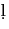

Next: Gurmukhi Table
Up: pundoc.itx (ITRANS doc)
Previous: Examples
- In The World's Writing Systems, Bright and Daniels,
a character a is given. This character is la
with a nuqta beneath it. There is no glyph for it in the
pun font. Perhaps it can be hard-coded.
- The symbol of the Sikhs, ka
 ,
is available as a glyph in the pun font.
This is accessible as khNDa or KND in the input text.
,
is available as a glyph in the pun font.
This is accessible as khNDa or KND in the input text.
Anshuman Pandey  apandey@u.washington.edu
apandey@u.washington.edu
Next: Gurmukhi Table
Up: pundoc.itx (ITRANS doc)
Previous: Examples
2009-12-04
ITRANS Home Page: http://www.aczoom.com/itrans/